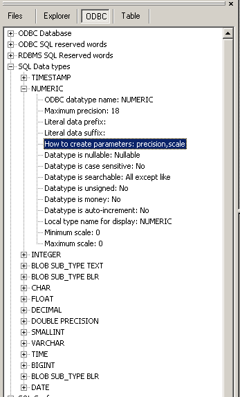

a RDBMS defined data type must be used in your SQL syntax. To see which data types are supported, see the section 'Data types' in the ODBC info tree.

The top level name (next to the +/-) sign in the tree must be used. If the precision and scale are defined, the maximum precision must be used in create / alter table statements. If a data type is used as a procedure parameter, check whether precision and scale must be stated in the procedure header.